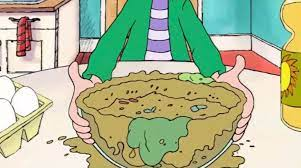

Glop

Description
Why waste good money on expensive ingredients?
There is no reason. Enter Glop.
Ingredients
- Bad carrots
- Mushy potatoes
- Expired broccoli
- Rotten lean ground beef
Steps
- Just like throw it all in a blender.
- If you don't have electricity, put it in a bucket and mash it with your feet like you're pressing grapes for wine.
- Serve lukewarm to your friends and enemies alike.